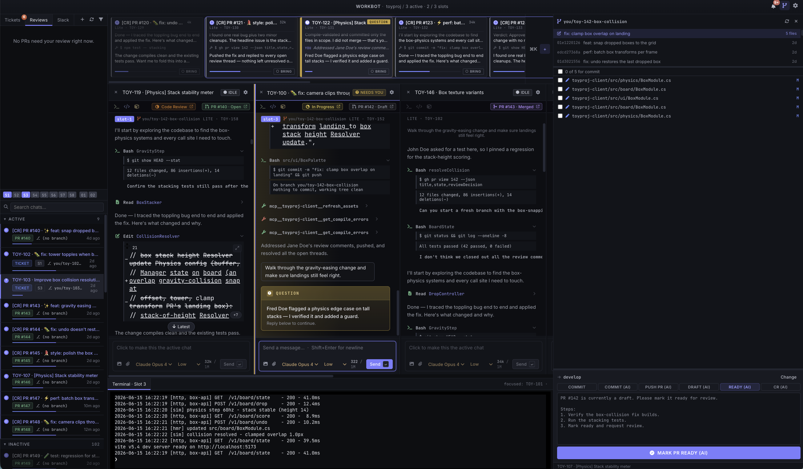

Warm slots: parallel agents without the reimport tax.
Run ten agents on a big game project the obvious way and you hit a wall: every fresh checkout makes the engine rebuild its whole asset cache. PopBot's answer is the warm slot — and it's the one thing other multi-agent tools simply don't do.
Big game projects are slow to switch between.
A game engine keeps a huge cache of imported art and code. Switch an AI agent to a different branch and the engine has to rebuild that cache from scratch — minutes of waiting, every time. Run several agents and they spend the day rebuilding. A warm slot is a ready-to-go workspace PopBot keeps that cache hot in, so an agent picks up in seconds instead of minutes. Here's the time it saves:
See slots inside the workspaceAnd it doesn't fill up your disk.
Each slot is a full, live copy of your project — but making a real copy per agent would eat hundreds of gigabytes each. Instead, PopBot's slots all share one base copy and only store what they change. So a whole team of agents fits in the space of a single project, not one copy per agent:
Made for Unity and Unreal.
This is why warm slots exist. A game project is huge, slow to import, and pins one engineer to one branch at a time. PopBot breaks that open — a dozen live editors, each on its own feature, all on one machine.
A dozen game builds, one repo's disk
Each editor is a copy-on-write clone of the whole project folder — and in Unity the built Library comes along for free, because copy-on-write shares those bytes until a chat changes them. Every agent gets its own fully-imported, build-ready game folder, yet a dozen of these full folders cost about the disk of one — not twelve copies.
Every chat gets its own editor
Each chat is handed its own MCP port to talk to its editor — Unity from 8080, Unreal from 8000, stepping up one per chat. So every agent drives only its own editor, never another chat's — a dozen editors run side by side without ever crossing wires.
Know which editor is which
PopBot stamps each live Unity window's title bar with its slot, so a wall of open editors is instantly readable — you always know which agent's game you're looking at. Unreal support coming.
Agentic coding is the easy part.
The hard part is getting genuinely good work out of many agents at once — keeping their output isolated so they don't step on each other, actually testing what they build, reviewing all of it closely, and never letting one quietly do something dangerous.
PopBot is the orchestration layer for that. It turns your tickets and review requests into one-click agent sessions, gives each agent a real, isolated workspace — its own working copy on Git or Perforce, and for game projects its own running app under test — runs them autonomously by default, and pulls every transcript, diff, terminal, and log into a single window.
This isn't a fire-and-forget vibe-coding tool — it's the opposite. You stay the lead, watching and reviewing everything the agents do. It's the reason PopBot works the way it does: you see every chat at once in the live thumbnails, every change inline as it happens, and every diff in the SCM panel to read before it ships. The agents do the typing; your judgment is what makes the work good.
It was built to drive a real production game's development with a small team — open-sourced as a reference you can fork and reshape for your own stack.

Built for running a fleet, not a single agent.
Multi-chat view with live thumbnails
Every open chat stays on screen — a strip of live thumbnails above side-by-side columns. Each thumbnail is a real, updating view of that chat, color-coded by state: running, done, waiting-on-you, error.
At a glance you see what every agent is doing and who needs you — and you can catch a wrong path early, redirecting before it burns time and tokens. One person supervises a whole fleet from one window.
Workspace-aware SCM interface
A built-in SCM panel — Git or Perforce — scoped to each chat's own workspace: working-copy status, recent commits, and per-file diffs for exactly that branch — you're never guessing which checkout you're acting on.
One-click, templated actions — Commit, Push PR, Make ready, Address CR, Rebase onto base — send a pre-filled instruction to the agent, with ${branch} / ${ticket} / ${prnum} filled in. Review the diff, click, ship.
End-to-end workflow
The whole loop in one place: your inbox (assigned tickets + reviews awaiting you) → in-progress agent work in isolated slots → GitHub / Perforce (push, open the PR, commit the CL) → code review in instant repoless chats → archive a finished chat → reopen and restart later with full history.
Click a ticket and PopBot names the branch or CL, leases a slot, moves the ticket to In Progress, and seeds the agent — then carries it through to a merged PR and back.
The details that make it trustworthy.
The real Claude Code & Codex
Each chat drives the actual agent through its official SDK — the same claude and codex CLIs, with all tools, skills, and MCP servers intact. Pick model and reasoning effort per chat.
Agents that test their own work
A slot can launch the real app — for Unity, a live Editor + sidecar server on a second display — so the agent clicks through the UI, reads logs, and verifies instead of guessing.
Persistent, archivable chats
Every chat is a durable transcript. Close it to free its slot, and reopen it later with full history intact.
Per-chat terminal & clickable code
An embedded terminal pinned to the chat's workspace, and file.ts:42 links that open straight in VS Code or Cursor.
Autonomous, never reckless
Agents auto-run safe work in their slot and pause for you on anything risky — git push / p4 submit, opening PRs, anything outside the workspace, network calls. Grants are per-chat, durable, revocable.
Multi-repo
Drive several repositories side by side, each with its own slot pool, color, and branch conventions.
Everything in one window.
Inbox — tickets & reviews
Your assigned tickets and review requests, ranked. One click spawns a chat.
Slots
The pool of warm, isolated workspaces — a working copy plus persistent build state. A chat leases one while it works.
Chat archive
Every past chat, searchable and reopenable with full history.
Chat thumbnails
A live strip of all open chats — color-coded by status: running, done, needs-you, error.
Chats
The focused agent sessions: prose, tool calls, and inline code diffs, streaming live.
Per-chat terminal
An embedded terminal pointed at that chat's workspace, for manual commands.
SCM panel
Working-copy status, commits, file diffs, and one-click commit / push / PR or review actions — Git or Perforce.
Four agents, one lead, zero thrash.
Click → it builds
A Linear ticket lands. Click it → PopBot opens a chat on you/eng-123-…, leases a slot, moves the ticket to In Progress, and hands the agent the full description. It writes the code, runs the app in its slot to verify, and pauses for your OK before pushing. You review the diff and hit Push PR.
Two agents, two trees
While that's running, a bug report comes in. Spawn a second chat — its own slot, its own branch — and the two agents work simultaneously without ever touching each other's tree. The thumbnail strip shows both: one green, one blue.
✓ doneRepoless review
A teammate's PR or changelist shows up in your Reviews tab. Click it → an instant repoless review chat opens, the agent reads the diff and the surrounding code, hunts for real bugs, and posts an inline review on GitHub or Swarm — while your build chats keep going.
▶ reviewingPick it back up
Close the finished chats to free their slots. Tomorrow, reopen the feature chat from the archive to address review feedback — the agent resumes with the entire conversation and its workspace intact.
↺ reopenedClone and Run Your Own Version
You can run the prebuilt binaries above — …, signed & notarized — or clone the repo and run your own version, customizing it to work the way you want it to.
- macOS, Windows, or Linux — macOS is the most-exercised platform; Windows and Linux are supported and shipped.
- Node 20+
- The
claudeand/orcodexCLIs (the agent backends), plusghandgit - Credentials (Linear, Jira & GitHub) are stored locally on your machine — never in the repo
- Optional: a Unity Editor for game projects; VS Code / Cursor; iTerm
$ git clone https://github.com/proofofplay/popbot-tool
$ npm install
# run the app in development
$ npm run dev
# build a signed .dmg
$ npm run package
MIT-licensed, and meant to be forked.
PopBot was shaped around one team driving one game. But the shape that made it powerful — agents, warm slots, an inbox-as-queue, an app-under-test, and a live fleet view — is general. The specifics are just defaults.
Swap the app-under-test
The Unity integration is one implementation of "let the agent run and verify the app." Replace it with your web app, your CLI, your own test harness.
Point the inbox elsewhere
Linear, Jira & GitHub are wired in, but the inbox-as-queue model is generic — adapt it to your tracker.
Rewire the git actions
Branch conventions, PR flows, and action templates are all yours to change in Preferences or in code.
Keep the core
Warm slots, persistent chats, the live-thumbnail fleet view, and the permission floor are the durable ideas worth keeping.
Dig deeper.
| Feature & Workflow Guide | The complete tour — concepts, every feature, and end-to-end workflows. Start here. |
| Configuration Guide | Set up every Preferences panel — integrations, repos, slots, agents — with screenshots. |
| User Stories | The user stories PopBot was measured against. |
| Core Model | The object model — Chat, Message, Slot, AgentSession — and their lifecycles. |
| Architecture | Process boundaries, IPC, and where each subsystem lives. |
| Development | Local dev setup, scripts, conventions. |
Run a fleet. Keep the thread.
If your team is reaching for more than one coding agent at a time without losing the thread, this is a working, opinionated starting point.